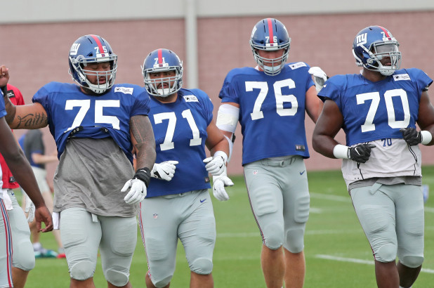

For many years, one lingering problem that the New York Giants have had is the complete abliteration of their offensive line. Over the last three years the New York Giants have finished within the top ten for allowed quarter back sacks, pressures and knockdowns. Even with the added talent of the star left tackle Nate Solder, the Giants can not seem to get their chemistry correct on the offensive line. There hasn't been a game in over four years where Eli Manning has not been pressured or sacked at least once. In the past, the Giants have been known for having a strong, crushing, physical line thats been able to provide time for the quarterback. Because of the little to no time Eli has had in the pocket, he has developed a habit known to football minds as "happy feet." This is when the quarterback is too worried about the oncoming pressure from defenders and they can not settle their feet and deliver the ball to recivers.
Another problem with not having a good offensive line is the inability to run the ball effectively. Primarily, the Giants are known as a run the ball down your throat, hard nose team. But, the Giants have lost this title over the last few years. They have not been able to run the ball effectively since 2008 where they had almost three running backs with over 1000 yards rushing. The only hope for the Giants rushing game is Saquon Barkley. He was the 2nd overall pick in the 2018 NFL Draft and he already has 468 yards on the ground through Week 6. But do not let this number decieve you, he has done this by himself. Hes had to cut the ball back across the field or find sliver openings in the line in order to move the ball.